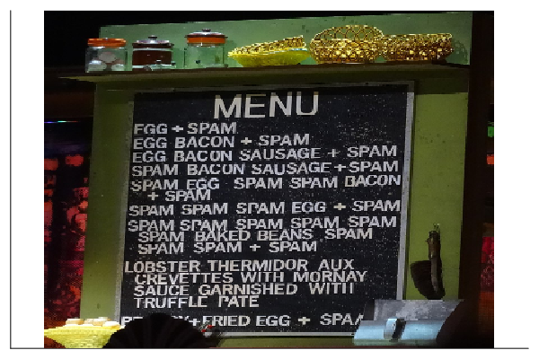

Chapter 4 Spam filter
4.1 Naive Bayes: Spam or Ham?
cd("./04_naive_bayes/")
import Pkg
Pkg.activate(".")
begin
using Markdown
using InteractiveUtils
using CSV
using DataFrames
using Distributions
using TextAnalysis
using Languages
using MLDataUtils
using Plots
using Images
endWe all hate spam emails. How can Bayes help us with this? What we will be introducing in this chapter is a simple yet effective way of using Bayesian probability to make a spam filter of emails based on their content. There are many possible origins of the ‘Spam’ word. Some people suggest Spam is a satirized way to refer to ‘fake meat’. Hence, in the context of emails, this would just mean ‘fake emails’. It makes sense, but the real story is another one. The origin of this term can be tracked to the 1970s, where the British surreal comedy troupe Monty Python gave life to it in a sketch of their Monty Python’s Flying Circus series. In the sketch, a customer wants to make an order in a restaurant, but all the restaurant’s items have spam in them. As the waitress describes the food, she repeats the word spam, and as this happens, a group of Vikings sitting on another table nearby start singing ’Spam, spam, spam, spam, spam, spam, spam, spam, lovely spam! Wonderful spam! until they are told to shut up.

Although the exact moment where this was first translated to different types of internet messages such as emails or chat messages can’t be stated clearly, it is a well known fact that users in each of these messaging instances chose the word ‘spam’ as a reference to Monty Python’s sketch, where spam was itself something unwanted, popping all over the menu and annoyingly trying to drown out the conversation.

Now that we have made some historical overview of the topic, we can start designing our spam filter. One of the most important things for the filter to work properly will be to feed it with some good training data. What do we mean by this? In this context, we mean to have a large enough corpus of emails pre-classified as spam or ham (that’s the way no-spam emails are called!), that the emails are collected from an heterogeneous group of people (spam and ham emails will be not be the same from a software developer, a social scientist or a graphics designer), and that the proportion of spam vs. ham in our data is somewhat representative of the real proportion of mails we receive.
Fortunately, there are a lot of very good datasets available online. We will be using one from Kaggle, a community of data science enthusiasts and practitioners who publish datasets, make competitions and share their knowledge.
This dataset is already a bit pre-processed, as you will probably notice. It consists of 5172 emails, represented by the rows of a matrix or DataFrame. Each column represents a word from the 3000 most frequent words in all mails, and picking a row and a column will tell us how many times a given word appears in a particular email. The last column indicates a 0 for ham emails and 1 for spam. Let’s give it a look:
raw_df = CSV.read("./04_naive_bayes/data/emails.csv", DataFrame)## 5172×3002 DataFrame
## Row │ Email No. the to ect and for of a you ho ⋯
## │ String15 Int64 Int64 Int64 Int64 Int64 Int64 Int64 Int64 In ⋯
## ──────┼─────────────────────────────────────────────────────────────────────────
## 1 │ Email 1 0 0 1 0 0 0 2 0 ⋯
## 2 │ Email 2 8 13 24 6 6 2 102 1
## 3 │ Email 3 0 0 1 0 0 0 8 0
## 4 │ Email 4 0 5 22 0 5 1 51 2
## 5 │ Email 5 7 6 17 1 5 2 57 0 ⋯
## 6 │ Email 6 4 5 1 4 2 3 45 1
## 7 │ Email 7 5 3 1 3 2 1 37 0
## 8 │ Email 8 0 2 2 3 1 2 21 6
## ⋮ │ ⋮ ⋮ ⋮ ⋮ ⋮ ⋮ ⋮ ⋮ ⋮ ⋱
## 5166 │ Email 5166 1 0 1 0 3 1 12 1 ⋯
## 5167 │ Email 5167 1 0 1 1 0 0 4 0
## 5168 │ Email 5168 2 2 2 3 0 0 32 0
## 5169 │ Email 5169 35 27 11 2 6 5 151 4
## 5170 │ Email 5170 0 0 1 1 0 0 11 0 ⋯
## 5171 │ Email 5171 2 7 1 0 2 1 28 2
## 5172 │ Email 5172 22 24 5 1 6 5 148 8
## 2993 columns and 5157 rows omittedWhat we are facing here is a classification problem, which means we would like to group data (emails) into different categories (spam or ham). For this reaseon, it is important that our training data pre-classified (this step is frequently done by a human) so our model can “learn” to associate the target variable (email type) with the input variables (words contained in the email). For example, a successful model might infer from the training data that emails containing the word “discount” have a high probability of being spam. We will implement a solution with the help of Bayes’ theorem. What we are going to do is to treat each email just as a collection of words. This is why our methodology is called naive Bayes: The particular relationship between words and the context will not be taken into account here. Our strategy will be to estimate a probability of an incoming email of being ham or spam and making a decision based on that. Our general approach can be summarized as:
\(P(spam|email) \propto P(email|spam)P(spam)\)
\(P(ham|email) \propto P(email|ham)P(ham)\)
Where we use \(\propto\) sign instead of \(=\) sign because the denominator from Bayes’ theorem is missing, but we won’t need to calculate it as it is the same for both probabilities and all we are going to care about is a comparison of these two probabilities.
So what do \(P(email|spam)\) and \(P(email|ham)\) mean and how do we calculate them? To answer this question, we have to remember that we are interpreting each email just as a collection of words, with no importance on their order within the text. In this naive approach, the semantics are not taken into account. In this scope, the conditional probability \(P(email|spam)\) just means the probability that a given email can be generated with the collection of words that appear in the spam category of our data. If this still sounds a bit confusing, let’s make a quick example. Consider for a moment that our training spam set of emails consists just of these three emails:
email 1: ‘are you interested in buying my product?’
email 2: ‘congratulations! you’ve won $1000!’
email 3: ‘check out this product!’
Also consider we have a new email and we want to ask ourselves what \(P(email|spam)\). This new email looks like this:
new email: ‘apply and win all this products!’
As we already said, \(P(email|spam)\) stands for the plausibility of the new email being generated by the words we encountered in our training spam email set. We can see that words like ‘win’ –which in our training set appears in the form of ‘won’, but there is a standard technique in linguistics named Lemmatization, which groups together inflected forms of a word, letting us consider ‘win’ and ‘won’ as the same word– and ‘product’ appear rather commonly in our training data. So we will expect \(P(email|spam)\) to be relatively high in this fake and simple example, as it contains words that are repeated among our spam emails data.
Let’s make all this discussion a bit more explicitly mathematical. The simplest way to write this in a mathematical way is to take each word appearing in the email and calculate the probability of it appearing in spam emails and ham emails. Then, we do this for each word in the email and finally multiply them,
\(P(email|spam) = \prod_{i=1}^{n}P(word_i|spam)\)
\(P(email|ham) = \prod_{i=1}^{n}P(word_i|ham)\)
The multiplication of each of the word probabilities here stands from the supposition that all the words in the email are statistically independent. We have to stress that this is not necessarily true, and most likely false. Words in a language are never independent from one another, but this simple assumption seems to be enough for the level of complexity our problem requires.
Let’s start building a solution for our problem and the details will be discussed later.
# Preprocessing of the data
# Get the list of all words present in all mails.
# We strip the first and last columns which are the email id and classification
all_words = names(raw_df)[2:end-1]
# Create a StringDocument, a struct with methods to remove articles and
# pronouns from the text
all_words_text = join(all_words, " ")
document = StringDocument(all_words_text)
# Remove articles and pronouns
prepare!(document, strip_articles)
prepare!(document, strip_pronouns)
# Create another DataFrame with the filtered words.
clean_words = split(TextAnalysis.text(document))
clean_words_df = raw_df[!, clean_words]
# Transform the DataFrame into a Matrix and transpose it to have each
# mail as a column.
data_matrix = Matrix(clean_words_df)'First, we would like to filter some words that are very common in the English language, such as articles and pronouns, which will most likely add noise rather than information to our classification algorithm. For this we will use two Julia packages that are specially designed for working with texts of any type. These are Languages.jl and TextAnalysis.jl. A good practice when dealing with models that learn from data like the one we are going to implement, is to divide our data in two: a training set and a testing set. We need to measure how good our model is performing, so we will train it with some data, and test it with some other data the model has never seen. This way we may be sure that the model is not tricking us. In Julia, the package MLDataUtils has some nice functionalities for data manipulations like this. We will use the functions splitobs to split our dataset in a train set and a test set and shuffleobs to randomize the order of our data in the split. It is important also to pass a labels array to our split function so that it knows how to properly split our dataset.
# splitting of the data in a train and test set
labels = raw_df.Prediction
(x_train, y_train), (x_test, y_test) = splitobs(shuffleobs((data_matrix, labels)), at = 0.7)Now that we have our data clean and split for training and testing, let’s return to the details of the calculations. The probability of finding a particular word in an email, given that we have a spam email, can be calculated like so,
\(P(word_i|spam) = \frac{N_{word_i|spam} + \alpha}{N_{spam} + \alpha N_{vocabulary}}\)
and analogously, for ham emails,
\(P(word_i|ham) = \frac{N_{word_i|ham} + \alpha}{N_{ham} + \alpha N_{vocabulary}}\)
With these formulas in mind, we now know exactly what we have to calculate from our data. We are going to need the numbers \(N_{word_i|spam}\) and \(N_{word_i|ham}\) for each word, that is, the number of times that a given word \(w_i\) is used in the spam and ham categories, respectively. Then \(N_{spam}\) and \(N_{ham}\) are the total number of times that words are used in the spam and ham categories (considering all the repetitions of the same words too), and finally, \(N_{vocabulary}\) is the total number of unique words in the dataset. \(α\) is just a smoothing parameter, so that probability of finding a word that is not in our dataset, doesn’t go down to 0.
As all this information will be particular for our dataset, so a clever way to aggregate all this is to use a Julia struct, and we can define the attributes of the struct that we will be using over and over for the prediction. Below we can see the implementation. The relevant attributes of the struct will be words_count_ham and words_count_spam, two dictionaries containing the frequency of appearance of each word in the ham and spam datasets, N_ham and N_spam the total number of words appearing in each category, and finally vocabulary, an array with all the unique words in our dataset. The line BayesSpamFilter() = new() is just the constructor of this struct. When we instantiate the filter, all the attributes will be undefined and we will have to define some functions to fill these variables with values relevant to our particular problem.
mutable struct BayesSpamFilter
words_count_ham::Dict{String, Int64}
words_count_spam::Dict{String, Int64}
N_ham::Int64
N_spam::Int64
vocabulary::Array{String}
BayesSpamFilter() = new()
endNow we are going to proceed to define some functions that will be important for our filter implementation. The function word_count below will help for counting the occurrences of each word in ham and spam categories.
function words_count(word_data, vocabulary, labels, spam=0)
# word_data is a matrix where each column is an email and each row is a word
count_dict = Dict{String, Int64}()
n_emails = size(word_data)[2]
for (i, word) in enumerate(vocabulary)
count_dict[word] = sum([word_data[i,j] for j in 1:n_emails if labels[j]==spam])
end
return count_dict
end## words_count (generic function with 2 methods)Next, we will define the fit! function for our spam filter struct. We are using the bang(!) convention for the functions that modify in-place their arguments, in this case, the spam filter struc itself. This will be the function that will fit our model to the data, a typical procedure in Data Science and Machine Learning areas. This fit function will use mainly the words_count function defined before to fill all the undefined parameters in the filter’s struct.
function fit!(model::BayesSpamFilter, x_train, y_train, voc)
model.vocabulary = voc
model.words_count_ham = words_count(x_train, model.vocabulary, y_train, 0)
model.words_count_spam = words_count(x_train, model.vocabulary, y_train, 1)
model.N_ham = sum(values(model.words_count_ham))
model.N_spam = sum(values(model.words_count_spam))
return
end## fit! (generic function with 1 method)Now it is time to instantiate our spam filter and fit the model to the data. We do this with our training data so then we can measure how well it is working in our test data.
# here we instantiate the Bayes filter and then we fit it to our data
spam_filter = BayesSpamFilter()## BayesSpamFilter(#undef, #undef, 14773214896, 8, #undef)fit!(spam_filter, x_train, y_train, vocabulary)We are now almost ready to make some predictions and test our model. The function below is just the implementation of the formula TAL that we
have already talked about. It will be used internally by the next function defined, spam_predict, which will receive a new email –the one we
would want to classify as spam or ham–, our fitted model, and two parameters, α which we have already discussed in the formula for \(P(word_i|spam)\)
and \(P(word_i|ham)\), and tol. We saw that the calculation for \(P(email|spam)\) and \(P(email|ham)\) required the multiplication of each
\(P(word_i|spam)\) and \(P(word_i|ham)\) term. When mails are too large, i.e., they have a lot of words, this multiplication may lead to very
small probabilities, up to the point that the computer interprets those probabilities as zero. This can’t happen, as we need values of
\(P(email|spam)\) and \(P(email|ham)\) that are larger than zero so we can multiply them by \(P(spam)\) and \(P(ham)\) respectively and compare these
values to make a prediction. The parameter tol is the maximum tolerance for the number of unique words in an email. If this number is greater
than the parameter tol, only the most frequent words will be considered and the rest will be neglected. How many of these most frequent words?
the first ‘tol’ most frequent words!
function word_spam_probability(word, words_count_ham, words_count_spam, N_ham, N_spam, n_vocabulary, α)
ham_prob = (words_count_ham[word] + α) / (N_ham + α*(n_vocabulary))
spam_prob = (words_count_spam[word] + α) /(N_spam + α*(n_vocabulary))
return ham_prob, spam_prob
endfunction spam_predict(email, model::BayesSpamFilter, α, tol=100)
ngrams_email = ngrams(StringDocument(email))
email_words = keys(ngrams_email)
n_vocabulary = length(model.vocabulary)
ham_prior = model.N_ham / (model.N_ham + model.N_spam)
spam_prior = model.N_spam / (model.N_ham + model.N_spam)
if length(email_words) > tol
word_freq = values(ngrams_email)
sort_idx = sortperm(collect(word_freq), rev=true)
email_words = collect(email_words)[sort_idx][1:tol]
end
email_ham_probability = BigFloat(1)
email_spam_probability = BigFloat(1)
for word in intersect(email_words, model.vocabulary)
word_ham_prob, word_spam_prob = word_spam_probability(word, model.words_count_ham, model.words_count_spam, model.N_ham, model.N_spam, n_vocabulary, α)
email_ham_probability *= word_ham_prob
email_spam_probability *= word_spam_prob
end
return ham_prior*email_ham_probability, spam_prior*email_spam_probability
endFinally we arrived to the point of actually testing our model. This is what the function below is all about. We feed it with our model fitted with the training data, and the test data we had splitted at the beginning, as well as with the labels of the classification of this data. This function makes a prediction for each email in our test data, using the values of our model and then checks if the prediction was right. We count all the correct predictions and then we divide this number by the total amount of mails, giving us an accuracy measurement.
# This function classifies each mail into Ham(0) or Spam(1)
function get_predictions(x_test, y_test, model::BayesSpamFilter, α, tol=200)
N = length(y_test)
predictions = Array{Int64, 1}(undef,N)
for i in 1:N
email = string([repeat(string(word, " "),N) for (word,N) in zip(model.vocabulary, x_test[:, i])]...)
pham, pspam = spam_predict(email, model, α, tol)
pred = argmax([pham, pspam]) - 1
predictions[i] = pred
end
predictions
end## get_predictions (generic function with 2 methods)predictions = get_predictions(x_test, y_test, spam_filter, 1)Here we can see how our model classifies the first 5 mails, 0 for ham and 1 for spam.
predictions[1:5]## 5-element Vector{Int64}:
## 1
## 0
## 0
## 0
## 1function spam_filter_accuracy(predictions, actual)
N = length(predictions)
correct = sum(predictions .== actual)
accuracy = correct / N
accuracy
endAs you can see below, the model (at least under this simple metric) is performing very well! An accuracy of about 0.95 is quite astonishing for a model so naive and simple, but it works!
spam_filter_accuracy(predictions, y_test)## 0.9490979381443299But we have to take into account one more thing. Our model classifies mails into spam or ham and the amount of ham mails is considerably higher than the spam ones. Let’s see the percentages
sum(x_train)/length(x_train)## 0.35228395004410606So we know that only the $(round(sum(x_train)/length(x_train),digits=2))% of the mails in the train section are spam. This classification problems where there is an unequal distribution of classes in the dataset are called Imbalanced.
So a good way to see how our model is performing is to construct a confusion matrix. A confusion matrix is an N x N matrix, where N is the number of target classes. The matrix compares the actual target values with those predicted by the our model. Lets construct one for our model:
function spam_filter_confusion_matrix(y_test, predictions)
# We create the matrix and calculated their values
confusion_matrix = [0 0; 0 0]
confusion_matrix[1,1] = sum(isequal(y_test[i], 0) & isequal(predictions[i], 0) for i in 1:length(y_test))
confusion_matrix[1,2] = sum(isequal(y_test[i], 1) & isequal(predictions[i], 0) for i in 1:length(y_test))
confusion_matrix[2,1] = sum(isequal(y_test[i], 0) & isequal(predictions[i], 1) for i in 1:length(y_test))
confusion_matrix[2,2] = sum(isequal(y_test[i], 1) & isequal(predictions[i], 1) for i in 1:length(y_test))
# Now we convert the confusion matrix into a DataFrame
confusion_df = DataFrame(prediction = String[], ham_mail = Int64[], spam_mail = Int64[])
confusion_df = vcat(confusion_df, DataFrame(prediction = "Model predicted Ham", ham_mail = confusion_matrix[1, 1], spam_mail = confusion_matrix[1, 2]))
confusion_df = vcat(confusion_df, DataFrame(prediction = "Model predicted Spam", ham_mail = confusion_matrix[2, 1], spam_mail = confusion_matrix[2, 2]))
return confusion_df
endconfusion_matrix = spam_filter_confusion_matrix(y_test[:], predictions)Now we can calculate the accuracy of the model segmented by category.
ham_accuracy = confusion_matrix[1, :ham_mail] / (confusion_matrix[1, :ham_mail] + confusion_matrix[2, :ham_mail])## 0.9604051565377533spam_accuracy = confusion_matrix[2, :spam_mail] / (confusion_matrix[1, :spam_mail] + confusion_matrix[2, :spam_mail])## 0.92274678111587984.2 Summary
In this chapter, we have used a naive-bayes approach to build a simple email spam filter. First, the dataset and the theoretical framework were introduced. Using Bayes’ theorem and the data available, we assigned probability of belonging to a spam or ham email to each word of the email dataset. The probability of a new email being classified as spam is therefore the product of the probabilities of each of its constituent words. Later, the data was pre-processed and a struct was defined for the spam filter object. Functions were then implemented to fit the spam filter object to the data. Finally, we evaluated our model performance calculating the accuracy and making a confusion matrix.
4.3 References
- What is Spam Filtering?
- Artificial Intelligence in Python: A Comprehensive Guide to Building Intelligent Apps for Python Beginners and Developers
- Data Algorithms: Recipes for scaling up with Hadoop and Spark
- Doing Data Science: Straight talk from the frontline
- How the word ‘Spam’ came to mean ‘Junk Message’
- Monty Python Sketch - YouTube